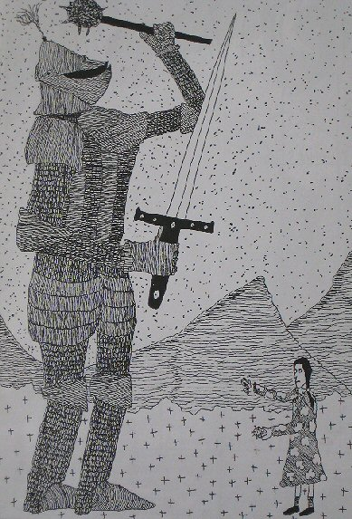

Tuesday, September the 1st, 2009
back to: title, date or indexes
There comes a time in everybody's life when foes must be fought in battle. This is a universal truth, as sure as eggs is eggs. It might be objected that some people have no foes to speak of, but that is moonshine. There is always an enemy lurking, lying in wait, whether it be a marauding troop of stiletto-wielding banditti, or an inner demon gnawing at the vitals. It might be further argued that one need not battle one's foe, but instead flee from them, running away screaming, mayhap, or hiding in a barn. Much good that would do you with one of those vitals-gnawing types! And even external foes, such as the banditti, will be in close pursuit, and track you down, and have at you. No, I am afraid it is true that sooner or later one must battle one's foes.
That being the case, it can be instructive to examine the historical record, to consider how others have battled their foes, to pick up handy tips. Here, for example, we have a scene depicted in a mezzotint by the noted mezzotintist Rex Tint:

Rex Tint is a particularly fab mezzotintist, so we can see at a glance the situation he has captured so skilfully. A gigantic knight, in chain mail, armed with a mighty sword and a big spiked thumping orb-on-a-stick, is confronted on a mountain path by a pale child threatening him with her girlie pin-cushion and pencil-sharpener. The knight is clearly in the utmost peril. His has been a life of chivalry and tourneys in which he never came upon a real foe, and even when he went off on a crusade against the Saracen hordes, he thought of them not as enemies but as mere pests in thrall to a false and fiendish god. But now, on what Rex Tint tells us in a scribble on the back of his mezzotint was a balmy Wednesday afternoon in the far Tyrol, he has come face to face with a very real and very menacing foe, the one that has awaited him, the one against whom he must do battle. Yes, he could flee. No doubt he could find a barn in which to cower, like a little mouse. But the knight knows his Nemesis would pursue him there, and find him trembling in the hayloft, from which there would be no escape. He knows this is his moment of destiny, when he must battle his foe, as we all must, one day, whether or not it be a Wednesday in the far Tyrol.
And what of this foe, this girlie in her gingham frock and corrective boots? Why does she menace the giant yet chivalrous knight? How did she find him on this remote mountain path in the far Tyrol? For how long has she pursued him across the globe, her pin-cushion and pencil-sharpener always in readiness, their pins and blades glinting in the sunlight, when the sun is shining, or protected by wrappers against rust, when it is raining? What fires burn in her tiny head? (Incidentally, note how Rex Tint has cleverly shown her with a head much larger in proportion than it ought to be, for purposes of illustrative oomph, using a mezzotinting technique known as “making the tiny bigger”.)
All these questions are pertinent, and the answers to them would provide the knight with valuable information about his foe. Ah, but were he to pause long enough to ponder them, he would be a dead man. His guts would be spilled upon a mountain path in the far Tyrol and his foe would stand triumphantly over him, one corrective boot planted on his neck. By not immediately engaging his foe in battle, without stopping to think, all would be lost.
So the lesson we can learn from Rex Tint's mezzotint is clear. When battling one's foe, go on the attack. Slash and slice with your sword and thump thump thump with your big spiked thumping orb-on-a-stick. Do not stint.
Whatever the specific nature of one's foe, and whatever the weaponry one has to hand, similar lessons can be learned by leafing through an album of mezzotints by Rex Tint, or indeed by careful study of other pictures by other artists. The important thing is to face one's foe and do battle. Remember, if one chooses to flee and to hide in a barn, it might turn out to be the eerie barn at Scroonhoonpooge farmyard, where lurk fouler and more terrible foes than you could ever imagine in your most hideous dreams.
Hooting Yard on the Air, December the 10th, 2009 : “Cadmium-Electroplated Bird Table” (starts around 16:20)